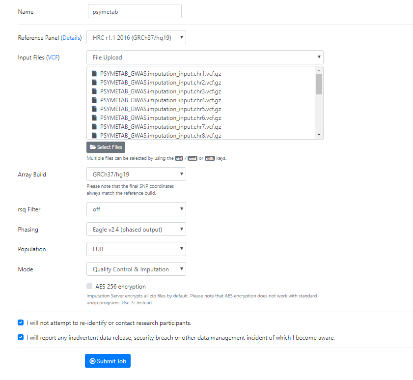
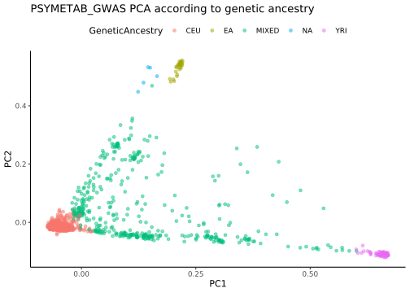
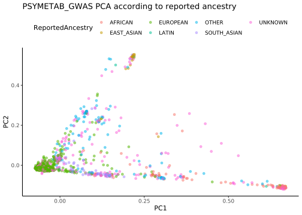

Last updated: 2020-06-23
Checks: 5 2
Knit directory: PSYMETAB/
This reproducible R Markdown analysis was created with workflowr (version 1.6.0). The Checks tab describes the reproducibility checks that were applied when the results were created. The Past versions tab lists the development history.
The R Markdown is untracked by Git. To know which version of the R Markdown file created these results, you’ll want to first commit it to the Git repo. If you’re still working on the analysis, you can ignore this warning. When you’re finished, you can run wflow_publish to commit the R Markdown file and build the HTML.
Great job! The global environment was empty. Objects defined in the global environment can affect the analysis in your R Markdown file in unknown ways. For reproduciblity it’s best to always run the code in an empty environment.
The command set.seed(20191126) was run prior to running the code in the R Markdown file. Setting a seed ensures that any results that rely on randomness, e.g. subsampling or permutations, are reproducible.
Great job! Recording the operating system, R version, and package versions is critical for reproducibility.
Nice! There were no cached chunks for this analysis, so you can be confident that you successfully produced the results during this run.
Using absolute paths to the files within your workflowr project makes it difficult for you and others to run your code on a different machine. Change the absolute path(s) below to the suggested relative path(s) to make your code more reproducible.
| absolute | relative |
|---|---|
| /data/sgg2/jenny/projects/PSYMETAB | . |
Great! You are using Git for version control. Tracking code development and connecting the code version to the results is critical for reproducibility. The version displayed above was the version of the Git repository at the time these results were generated.
Note that you need to be careful to ensure that all relevant files for the analysis have been committed to Git prior to generating the results (you can use wflow_publish or wflow_git_commit). workflowr only checks the R Markdown file, but you know if there are other scripts or data files that it depends on. Below is the status of the Git repository when the results were generated:
Ignored files:
Ignored: ._docs
Ignored: .drake/
Ignored: analysis/.Rhistory
Ignored: analysis/._GWAS.Rmd
Ignored: analysis/._data_processing_in_genomestudio.Rmd
Ignored: analysis/._quality_control.Rmd
Ignored: analysis/GWAS/
Ignored: analysis/PRS/
Ignored: analysis/QC/
Ignored: analysis_prep_1_clustermq.out
Ignored: analysis_prep_2_clustermq.out
Ignored: analysis_prep_3_clustermq.out
Ignored: analysis_prep_4_clustermq.out
Ignored: data/processed/
Ignored: data/raw/
Ignored: download_impute_1_clustermq.out
Ignored: init_analysis_1_clustermq.out
Ignored: init_analysis_2_clustermq.out
Ignored: init_analysis_3_clustermq.out
Ignored: init_analysis_4_clustermq.out
Ignored: init_analysis_5_clustermq.out
Ignored: init_analysis_6_clustermq.out
Ignored: packrat/lib-R/
Ignored: packrat/lib-ext/
Ignored: packrat/lib/
Ignored: post_impute_1_clustermq.out
Ignored: pre_impute_qc_1_clustermq.out
Ignored: process_init_10_clustermq.out
Ignored: process_init_11_clustermq.out
Ignored: process_init_12_clustermq.out
Ignored: process_init_13_clustermq.out
Ignored: process_init_14_clustermq.out
Ignored: process_init_15_clustermq.out
Ignored: process_init_16_clustermq.out
Ignored: process_init_17_clustermq.out
Ignored: process_init_18_clustermq.out
Ignored: process_init_19_clustermq.out
Ignored: process_init_1_clustermq.out
Ignored: process_init_20_clustermq.out
Ignored: process_init_21_clustermq.out
Ignored: process_init_22_clustermq.out
Ignored: process_init_23_clustermq.out
Ignored: process_init_24_clustermq.out
Ignored: process_init_25_clustermq.out
Ignored: process_init_26_clustermq.out
Ignored: process_init_27_clustermq.out
Ignored: process_init_28_clustermq.out
Ignored: process_init_29_clustermq.out
Ignored: process_init_2_clustermq.out
Ignored: process_init_30_clustermq.out
Ignored: process_init_31_clustermq.out
Ignored: process_init_3_clustermq.out
Ignored: process_init_4_clustermq.out
Ignored: process_init_5_clustermq.out
Ignored: process_init_6_clustermq.out
Ignored: process_init_7_clustermq.out
Ignored: process_init_8_clustermq.out
Ignored: process_init_9_clustermq.out
Ignored: prs_1_clustermq.out
Ignored: prs_2_clustermq.out
Ignored: prs_3_clustermq.out
Ignored: prs_4_clustermq.out
Untracked files:
Untracked: analysis/genetic_quality_control.Rmd
Untracked: analysis/plans.Rmd
Untracked: analysis_prep.log
Untracked: download_impute.log
Untracked: grs.log
Untracked: init_analysis.log
Untracked: process_init.log
Untracked: prs.log
Unstaged changes:
Modified: analysis/GWAS.Rmd
Modified: analysis/data_sources.Rmd
Modified: analysis/index.Rmd
Modified: analysis/pheno_quality_control.Rmd
Deleted: analysis/project.Rmd
Modified: analysis/quality_control.Rmd
Modified: cache_log.csv
Modified: post_impute.log
Modified: slurm_clustermq.tmpl
Note that any generated files, e.g. HTML, png, CSS, etc., are not included in this status report because it is ok for generated content to have uncommitted changes.
There are no past versions. Publish this analysis with wflow_publish() to start tracking its development.
The following document outlines and summarizes the genetic quality control and processing procedure that was followed to create a clean, imputed dataset.
Step 1 was performed entirely on CHUV computer
code/radomize_IDs.r was run on CHUV computer before building GenomeStudio project.[Header],,,,,,,,,,,,,
Investigator Name,,,,,,,,,,,,,
Project Name,,,,,,,,,,,,,
Experiment Name,,,,,,,,,,,,,
Date,,,,,,,,,,,,,
[Manifests],,,,,,,,,,,,,
A,GSA_UPPC_20023490X357589_A1,,,,,,,,,,,,
[Data],,,,,,,,,,,,,${ID}002.L:\PCN\UBPC\ANALYSES_RECHERCHE\Jenny\PSYMETAB_GWAS\data.code/randomize_IDs.r), and save to above folder as: Eap0819_1t26_27to29corrected_7b9b_randomizedID.csv.Eap0819_1t26_27to29corrected_7b9.csv, if needed.L:\PCN\UBPC\ANALYSES_RECHERCHE\Jenny\PSYMETAB_GWAS, named: GS_project_26092019 (data of creation).L:\PCN\UBPC\ANALYSES_RECHERCHE\Jenny\PSYMETAB_GWAS as project repository.L:\PCN\UBPC\ANALYSES_RECHERCHE\Jenny\PSYMETAB_GWAS\data\Eap0819_1t26_27to29corrected_7b9b_randomizedID.csv,L:\PCN\UBPC\ANALYSES_RECHERCHE\Jenny\PSYMETAB_GWAS\data,L:\PCN\UBPC\ANALYSES_RECHERCHE\Jenny\PSYMETAB_GWAS\data.L:\PCN\UBPC\ANALYSES_RECHERCHE\Jenny\PSYMETAB_GWAS\data\GSPMA24v1_0-A_4349HNR_Samples.egt and click “Finish”.L:\PCN\UBPC\ANALYSES_RECHERCHE\Jenny\PSYMETAB_GWAS\GS_project_26092019.GS_project_26092019.bsc was opened (requires Genome Studio) and used for clustering.L:\PCN\UBPC\ANALYSES_RECHERCHE\Jenny\PSYMETAB_GWAS, and named: GS_project_26092019_cluster.L:\PCN\UBPC\ANALYSES_RECHERCHE\Jenny\PSYMETAB_GWAS, and named: PLINK_091019_0920.L:\PCN\UBPC\ANALYSES_RECHERCHE\Jenny\PSYMETAB_GWAS\PLINK_091019_0920.013CB
017CB
074CB
095CB
150CRV
192CRV
193CRV
156CSM
181CSM
191CSM
224UAS
234GL
058GP
246GP
089PPL:\PCN\UBPC\ANALYSES_RECHERCHE\Jenny\PSYMETAB_GWAS\PSYMETAB_GS2\Plates27to29_0819.Plates27to29_0819_cluster, and PLINK_270819_0457).PLINK_030919_0149) were copied to SGG directory (names of plink files according to parent directory: DATA).je4649@hpc1.chuv.ch<chuv-password>22/data/sgg2/jenny/projects/PSYMETAB_GWAS/data/raw.All subsequent steps were performed on the sgg server and run using drake plan
Results of Step 3-6 are saved to analysis/QC. The majority of analyses were performed using PLINK (either version 2.0 or 1.9) Each sub-spet (i.e. 0-15) corresponds to one folder within analysis/QC
Source code for Step 3 can be found at: code/pre_imputation_qc.sh.
data/processed/phenotype_data/PSYMETAB_GWAS_sex.txt (created above).
F M
1298 1469 #FID1 ID1 FID2 ID2 NSNP HETHET IBS0 KINSHIP
1 2071 BEEEDIGO002 224 BEEEDIGO 703110 0.178137 0.00000000000 0.499539
2 1873 CQLIXEZP002 64 CQLIXEZP 703045 0.153413 0.00000142238 0.499504
3 1965 EFWKQOIK002 1433 EFWKQOIK 697403 0.151525 0.00000860335 0.496680
4 1886 HFNWJHCI002 1448 HFNWJHCI 702845 0.153089 0.00000426837 0.499547
5 2075 HROOJNCI002 553 HROOJNCI 702167 0.155970 0.00000284833 0.499257
6 1974 IOAWLZGK002 549 IOAWLZGK 704278 0.153028 0.00000000000 0.499847
7 2314 KLFEBCIE002 1916 KLFEBCIE 700799 0.153949 0.00000570777 0.499007
8 2073 LWCGLSDP002 317 LWCGLSDP 702226 0.150114 0.00000427213 0.499363
9 2379 PBAIFEMQ002 2070 PBAIFEMQ 700642 0.154083 0.00000285452 0.498820
10 2009 PNWDYVRH002 494 PNWDYVRH 703993 0.153736 0.00000284094 0.499806
11 2068 QHNUPGWK002 318 QHNUPGWK 702891 0.154500 0.00000569078 0.499363
12 1928 QZAUHIPY002 559 QZAUHIPY 702896 0.144711 0.00000142269 0.499826
13 2067 SSITXXAY002 283 SSITXXAY 702409 0.152603 0.00000284734 0.499418
14 1947 WKBFDWJF002 566 WKBFDWJF 703642 0.153506 0.00000284235 0.499783
15 1657 XABRILAR002 1385 XABRILAR 698282 0.154672 0.00000000000 0.497315data/processed/reference_files/rsid_conversion.txtMAF = 0.geno --0.1):
mind --0.1):
geno --0.05):
mind --0.05):
geno --0.01):
mind --0.01):
Total removed: 50693 variants (7.91%) and 11 individuals (0.40%).
-- freq).HRC-1000G-check-bim-NoReadKey.pl (download link).
FID and IID.Run-plink.sh script from #2.vcf files.Source code for Step 4 can be found at: code/download_imputation.sh and code/check_imputation.sh.
vcf.gz files to Michigan Imputation Server as follows:
Run, Genotype Imputation (Minimac4).HRC r1.1 2016 (GRCh37/hg19).GRCh37/hg19.off.Eagle v2.4 (phased output).EUR.Quality Control & Imputation.  [1] "chr_1.log" "chr_1.zip" "chr_10.log"
[4] "chr_10.zip" "chr_11.log" "chr_11.zip"
[7] "chr_12.log" "chr_12.zip" "chr_13.log"
[10] "chr_13.zip" "chr_14.log" "chr_14.zip"
[13] "chr_15.log" "chr_15.zip" "chr_16.log"
[16] "chr_16.zip" "chr_17.log" "chr_17.zip"
[19] "chr_18.log" "chr_18.zip" "chr_19.log"
[22] "chr_19.zip" "chr_2.log" "chr_2.zip"
[25] "chr_20.log" "chr_20.zip" "chr_21.log"
[28] "chr_21.zip" "chr_22.log" "chr_22.zip"
[31] "chr_3.log" "chr_3.zip" "chr_4.log"
[34] "chr_4.zip" "chr_5.log" "chr_5.zip"
[37] "chr_6.log" "chr_6.zip" "chr_7.log"
[40] "chr_7.zip" "chr_8.log" "chr_8.zip"
[43] "chr_9.log" "chr_9.zip" "chr1.dose.vcf.gz"
[46] "chr1.info.gz" "chr10.dose.vcf.gz" "chr10.info.gz"
[49] "chr11.dose.vcf.gz" "chr11.info.gz" "chr12.dose.vcf.gz"
[52] "chr12.info.gz" "chr13.dose.vcf.gz" "chr13.info.gz"
[55] "chr14.dose.vcf.gz" "chr14.info.gz" "chr15.dose.vcf.gz"
[58] "chr15.info.gz" "chr16.dose.vcf.gz" "chr16.info.gz"
[61] "chr17.dose.vcf.gz" "chr17.info.gz" "chr18.dose.vcf.gz"
[64] "chr18.info.gz" "chr19.dose.vcf.gz" "chr19.info.gz"
[67] "chr2.dose.vcf.gz" "chr2.info.gz" "chr20.dose.vcf.gz"
[70] "chr20.info.gz" "chr21.dose.vcf.gz" "chr21.info.gz"
[73] "chr22.dose.vcf.gz" "chr22.info.gz" "chr3.dose.vcf.gz"
[76] "chr3.info.gz" "chr4.dose.vcf.gz" "chr4.info.gz"
[79] "chr5.dose.vcf.gz" "chr5.info.gz" "chr6.dose.vcf.gz"
[82] "chr6.info.gz" "chr7.dose.vcf.gz" "chr7.info.gz"
[85] "chr8.dose.vcf.gz" "chr8.info.gz" "chr9.dose.vcf.gz"
[88] "chr9.info.gz" "qcreport.html" "snps-excluded.txt" Chr Num imputed variants
1 1 3069931
2 2 3392237
3 3 2821894
4 4 2787581
5 5 2588168
6 6 2460111
7 7 2289305
8 8 2242705
9 9 1686471
10 10 1927503
11 11 1936990
12 12 1848117
13 13 1385433
14 14 1270436
15 15 1139215
16 16 1281297
17 17 1090072
18 18 1104755
19 19 868554
20 20 884983
21 21 531276
22 22 524544
23 all 39131578Source code for Step 5 can be found at: code/post_imputation_qc.sh.
info < 0.30 Chr Num imputed variants R2 filtered
1 1 3069931 2223452
2 2 3392237 2454557
3 3 2821894 2059285
4 4 2787581 2043343
5 5 2588168 1887050
6 6 2460111 1813223
7 7 2289305 1659374
8 8 2242705 1632513
9 9 1686471 1218207
10 10 1927503 1411585
11 11 1936990 1421749
12 12 1848117 1352003
13 13 1385433 1019900
14 14 1270436 920528
15 15 1139215 816986
16 16 1281297 894859
17 17 1090072 771058
18 18 1104755 798012
19 19 868554 607422
20 20 884983 631946
21 21 531276 374376
22 22 524544 367153
23 all 39131578 28378581bim file to include rsIDs instead of chr:bp convention:
chr:bp:ref:alt.chr:bp:ref:alt./data/sgg2/jenny/data/dbSNP/dbSNP_SNP_list_chr${chr}.txt, which was processed according to description in jenny/SGG_generic/scripts/public_data.sh.require=info "TYPED" flag). Chr Num imputed variants R2 filtered Typed SNPs
1 1 3069931 2223452 44252
2 2 3392237 2454557 45514
3 3 2821894 2059285 37277
4 4 2787581 2043343 34139
5 5 2588168 1887050 32223
6 6 2460111 1813223 38957
7 7 2289305 1659374 30649
8 8 2242705 1632513 28611
9 9 1686471 1218207 23815
10 10 1927503 1411585 27714
11 11 1936990 1421749 27722
12 12 1848117 1352003 26603
13 13 1385433 1019900 19346
14 14 1270436 920528 17920
15 15 1139215 816986 17002
16 16 1281297 894859 18447
17 17 1090072 771058 16646
18 18 1104755 798012 15625
19 19 868554 607422 12997
20 20 884983 631946 13557
21 21 531276 374376 7582
22 22 524544 367153 8104
23 all 39131578 28378581 544702bim, bed, and fam files) using the --hard-call-threshold flag set at 0.1.vcf as there is no merge function in plink (using the flag --recode vcf id-paste=iid vcf-dosage=HDS).bcftools concat.plink2 --vcf <output-name> dosage=HDS.--geno 0.1).--maf 0.05).--hwe 5e-4).snpweights software from Alkes Price software page using SNP weights for European, West African, East Asian and Native American ancestral populations (downloaded here).
${output_name}.NA.predpc.${output_name}.NA.predpc output file are: sample ID, population label, number of SNPs used for inference, predicted PC1, predicted PC2, predicted PC3, % YRI ancestry, % CEU ancestry, % East Asian ancestry, and % Native American ancestry.% CEU ancestry > 0.8 as done in other papers.snpweights in Europeans using SNP weights for NW, SE and AJ ancestral populations of European Americans (downloaded [here] (https://cdn1.sph.harvard.edu/wp-content/uploads/sites/181/2014/03/snpwt.EA_.zip)).
${output_name}.CEU80.EA.predpc output file are: sample ID, population label, number of SNPs used for inference, predicted PC1, predicted PC2, % Northwest European ancestry, % Southeast European ancestry, % Ashkenazi Jewish ancestry.--indep-pairwise 50 5 0.2.--exclude range $flashpca/exclusion_regions_hg19.txt.[flashpca](https://github.com/gabraham/flashpca) in unrelated set (from step 6).YRI (African), use a threshold of % ancestry > 0.8.% ancestry > 0.7.MIXED, in this way 5 ethnic groups remain: CEU (European), EA (East Asian), NA (Native American), YRI (West African), and MIXED.
AFRICAN EAST_ASIAN EUROPEAN LATIN OTHER SOUTH_ASIAN UNKNOWN
CEU 0 0 1540 0 72 1 541
EA 0 17 0 0 2 3 7
MIXED 54 4 79 0 99 55 135
NA 0 0 0 1 3 0 1
YRI 47 4 1 1 3 0 27
< 100 ignore.> 100, evaluate HWE for each variant.p < 0.00000001).
Source code for Step 5 can be found at: code/final_processing.sh.
--geno 0.1, --maf 0.05, --hwe 5e-4).--indep-pairwise 50 5 0.2).
--bad-ld, but they suggest that this is almost always a bad idea.
PCs were not successfully computed for ethnic group: EA.
The indep log file reads:
[1] "PLINK v2.00a3LM 64-bit Intel (10 Mar 2020)"
[2] "Options in effect:"
[3] " --bfile EA/PSYMETAB_GWAS.EA.QC"
[4] " --indep-pairwise 50 5 0.2"
[5] " --out EA/PSYMETAB_GWAS.EA.indep"
[6] " --remove ../../11_relatedness/PSYMETAB_GWAS_related_ids.txt"
[7] " --threads 16"
[8] ""
[9] "Hostname: node09.cluster"
[10] "Working directory: /data/sgg2/jenny/projects/PSYMETAB/analysis/QC/15_final_processing/final_pca"
[11] "Start time: Tue Jun 9 23:53:01 2020"
[12] ""
[13] "Random number seed: 1591739581"
[14] "128666 MiB RAM detected; reserving 64333 MiB for main workspace."
[15] "Using up to 16 threads (change this with --threads)."
[16] "29 samples (0 females, 0 males, 29 ambiguous; 29 founders) loaded from"
[17] "EA/PSYMETAB_GWAS.EA.QC.fam."
[18] "262668 variants loaded from EA/PSYMETAB_GWAS.EA.QC.bim."
[19] "Note: No phenotype data present."
[20] "--remove: 28 samples remaining."
[21] "28 samples (0 females, 0 males, 28 ambiguous; 28 founders) remaining after main"
[22] "filters."
[23] "Error: This run estimates linkage disequilibrium between variants, but there"
[24] "are less than 50 samples to estimate from. You should perform this operation"
[25] "on a larger dataset."
[26] "(Strictly speaking, you can also override this error with --bad-ld, but this is"
[27] "almost always a bad idea.)"
[28] ""
[29] "End time: Tue Jun 9 23:53:01 2020"
---------------------------------------------------------------------------
PCs were not successfully computed for ethnic group: NA.
The indep log file reads:
[1] "PLINK v2.00a3LM 64-bit Intel (10 Mar 2020)"
[2] "Options in effect:"
[3] " --bfile NA/PSYMETAB_GWAS.NA.QC"
[4] " --indep-pairwise 50 5 0.2"
[5] " --out NA/PSYMETAB_GWAS.NA.indep"
[6] " --remove ../../11_relatedness/PSYMETAB_GWAS_related_ids.txt"
[7] " --threads 16"
[8] ""
[9] "Hostname: node09.cluster"
[10] "Working directory: /data/sgg2/jenny/projects/PSYMETAB/analysis/QC/15_final_processing/final_pca"
[11] "Start time: Tue Jun 9 23:54:01 2020"
[12] ""
[13] "Random number seed: 1591739641"
[14] "128666 MiB RAM detected; reserving 64333 MiB for main workspace."
[15] "Using up to 16 threads (change this with --threads)."
[16] "5 samples (0 females, 0 males, 5 ambiguous; 5 founders) loaded from"
[17] "NA/PSYMETAB_GWAS.NA.QC.fam."
[18] "208292 variants loaded from NA/PSYMETAB_GWAS.NA.QC.bim."
[19] "Note: No phenotype data present."
[20] "--remove: 5 samples remaining."
[21] "5 samples (0 females, 0 males, 5 ambiguous; 5 founders) remaining after main"
[22] "filters."
[23] "Error: This run estimates linkage disequilibrium between variants, but there"
[24] "are less than 50 samples to estimate from. You should perform this operation"
[25] "on a larger dataset."
[26] "(Strictly speaking, you can also override this error with --bad-ld, but this is"
[27] "almost always a bad idea.)"
[28] ""
[29] "End time: Tue Jun 9 23:54:01 2020"
--------------------------------------------------------------------------- In general, clean, ethnic specific imputed data were used for analyses (from #15.1), and ethnic-specific PCs were used as adjustments (from #15.5).
Run the following commands to compress some large intermediate files.
project_dir="/data/sgg2/jenny/projects/PSYMETAB"
output_dir=$project_dir/analysis/QC
cd $output_dir/06_imputation_get
mkdir archive
tar --exclude='*.info.gz' --exclude archive -czvf archive/06_imputation_get.tar.gz * --remove-files
cd $output_dir
tar -czvf 10_merge_imputed.tar.gz 10_merge_imputed --remove-files
cd $output_dir/13_hwecheck
mkdir archive
tar --exclude='*.hardy.sig.unique' --exclude '*.hwecheck.step13.pvar' --exclude archive -czvf archive/13_hwecheck.tar.gz * --remove-files
cd $output_dir/14_mafcheck
mkdir archive
tar --exclude='_low_maf_snps.txt' --exclude '*.mafcheck.step14.pvar' --exclude archive -czvf archive/14_mafcheck.tar.gz * --remove-files
If you need to unzip these files, it can be done as follows: tar xvzf file.tar.gz
sessionInfo()R version 3.5.3 (2019-03-11)
Platform: x86_64-pc-linux-gnu (64-bit)
Running under: CentOS Linux 7 (Core)
Matrix products: default
BLAS: /data/sgg2/jenny/bin/R-3.5.3/lib64/R/lib/libRblas.so
LAPACK: /data/sgg2/jenny/bin/R-3.5.3/lib64/R/lib/libRlapack.so
locale:
[1] en_US.UTF-8
attached base packages:
[1] stats graphics grDevices utils datasets methods base
other attached packages:
[1] tidyselect_0.2.5 tidylog_1.0.1 OpenImageR_1.1.6
[4] fuzzyjoin_0.1.5 kableExtra_1.1.0 R.utils_2.9.2
[7] R.oo_1.23.0 R.methodsS3_1.7.1 TwoSampleMR_0.4.25
[10] reader_1.0.6 NCmisc_1.1.6 optparse_1.6.4
[13] readxl_1.3.1 ggthemes_4.2.0 tryCatchLog_1.1.6
[16] futile.logger_1.4.3 DataExplorer_0.8.0 taRifx_1.0.6.1
[19] qqman_0.1.4 MASS_7.3-51.5 bit64_0.9-7
[22] bit_1.1-14 rslurm_0.5.0 rmeta_3.0
[25] devtools_2.2.1 usethis_1.5.1 data.table_1.12.8
[28] clustermq_0.8.8.1 future.batchtools_0.8.1 future_1.15.1
[31] rlang_0.4.5 knitr_1.26 drake_7.12.0.9000
[34] forcats_0.4.0 stringr_1.4.0 dplyr_0.8.3
[37] purrr_0.3.3 readr_1.3.1 tidyr_1.0.3
[40] tibble_2.1.3 ggplot2_3.2.1 tidyverse_1.3.0
[43] pacman_0.5.1 processx_3.4.1 workflowr_1.6.0
loaded via a namespace (and not attached):
[1] backports_1.1.6 plyr_1.8.5 igraph_1.2.5
[4] lazyeval_0.2.2 storr_1.2.1 listenv_0.8.0
[7] digest_0.6.25 htmltools_0.4.0 tiff_0.1-5
[10] fansi_0.4.1 magrittr_1.5 checkmate_1.9.4
[13] memoise_1.1.0 base64url_1.4 remotes_2.1.0
[16] globals_0.12.5 modelr_0.1.5 prettyunits_1.1.0
[19] jpeg_0.1-8.1 colorspace_1.4-1 rvest_0.3.5
[22] rappdirs_0.3.1 haven_2.2.0 xfun_0.11
[25] callr_3.4.0 crayon_1.3.4 jsonlite_1.6
[28] brew_1.0-6 glue_1.4.0 gtable_0.3.0
[31] webshot_0.5.2 pkgbuild_1.0.6 scales_1.1.0
[34] futile.options_1.0.1 DBI_1.1.0 Rcpp_1.0.3
[37] xtable_1.8-4 viridisLite_0.3.0 progress_1.2.2
[40] txtq_0.2.0 clisymbols_1.2.0 htmlwidgets_1.5.1
[43] httr_1.4.1 getopt_1.20.3 calibrate_1.7.5
[46] ellipsis_0.3.0 farver_2.0.1 pkgconfig_2.0.3
[49] dbplyr_1.4.2 labeling_0.3 reshape2_1.4.3
[52] later_1.0.0 munsell_0.5.0 cellranger_1.1.0
[55] tools_3.5.3 cli_2.0.1 generics_0.0.2
[58] broom_0.5.3 fastmap_1.0.1 evaluate_0.14
[61] yaml_2.2.0 fs_1.3.1 packrat_0.5.0
[64] nlme_3.1-143 mime_0.8 formatR_1.7
[67] proftools_0.99-2 xml2_1.2.2 compiler_3.5.3
[70] rstudioapi_0.10 png_0.1-7 filelock_1.0.2
[73] testthat_2.3.1 reprex_0.3.0 stringi_1.4.5
[76] highr_0.8 ps_1.3.0 desc_1.2.0
[79] lattice_0.20-38 vctrs_0.2.4 pillar_1.4.3
[82] lifecycle_0.1.0 networkD3_0.4 httpuv_1.5.2
[85] R6_2.4.1 promises_1.1.0 gridExtra_2.3
[88] sessioninfo_1.1.1 codetools_0.2-16 lambda.r_1.2.4
[91] assertthat_0.2.1 pkgload_1.0.2 rprojroot_1.3-2
[94] withr_2.1.2 batchtools_0.9.12 parallel_3.5.3
[97] hms_0.5.3 grid_3.5.3 rmarkdown_1.18
[100] git2r_0.26.1 shiny_1.4.0 lubridate_1.7.4